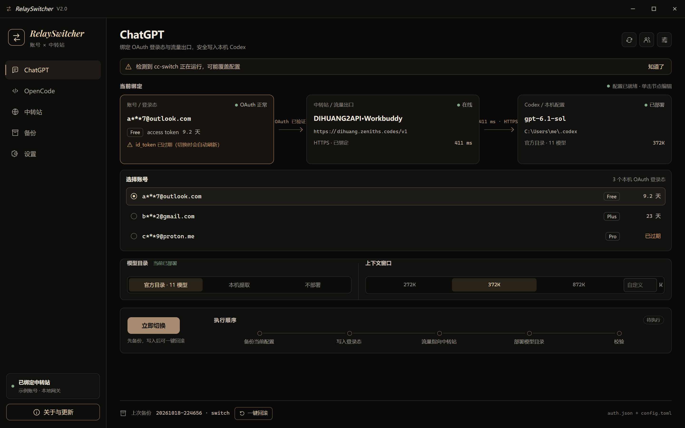
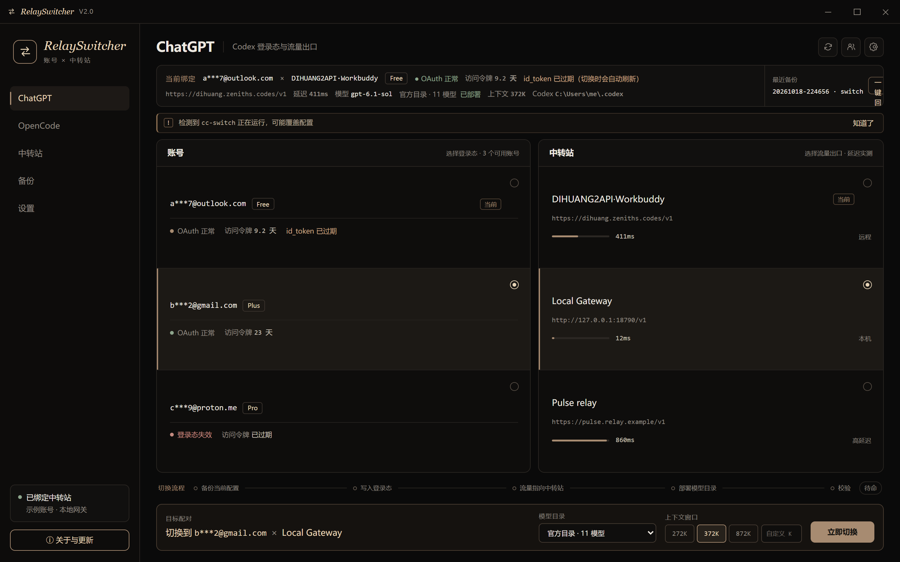
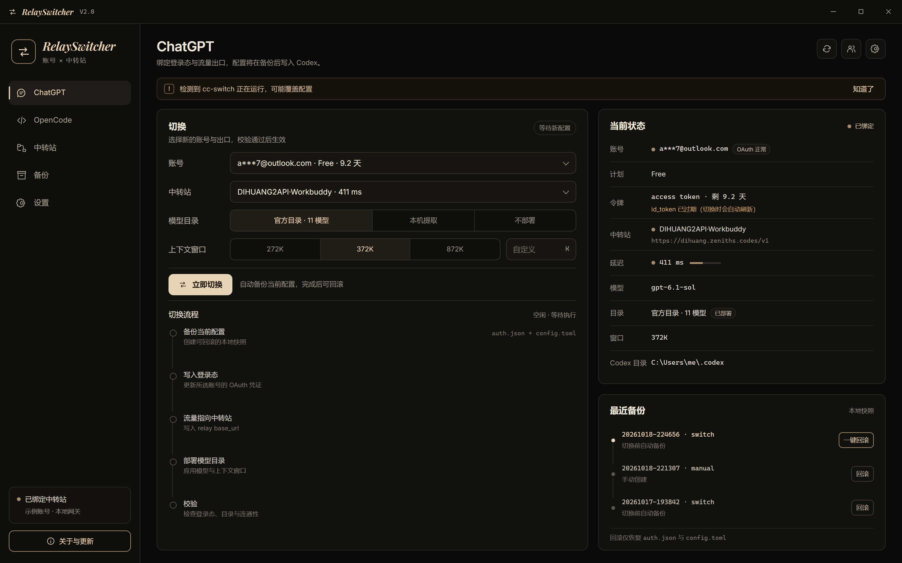

A · 线路图
- 顶部把当前绑定画成一条线：账号 → 中转站 → Codex，一眼看清现在走的是哪条路
- 点哪个节点就在下面展开它的选择（图里展开的是账号）
- 目录、上下文窗口一行；底部是「立即切换」+ 横向流程进度；最下面一条是上次备份和一键回滚

B · 两张列表
- 左边账号、右边中转站，各点一行组成要切换的组合，延迟用小条直观对比
- 顶部一行写着「当前绑定」的全部信息；底部操作栏写着「切换到 X × Y」
- 小瑕疵：侧栏图标丢了、右上「一键回滚」被挤窄，实现时会修

C · 控制台
- 左边是切换表单（下拉 + 分段选择），下面是竖向的五步流程清单
- 右边是「当前状态」明细表 + 最近 3 次备份，每次都能单独回滚
- 信息最全、最像传统设置页
